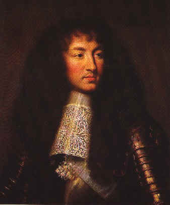

|
|
|
|
|
Le Conseil souverain Louis XIV décide de régner en monarque absolu. Les répercussions sont majeures en Nouvelle-France où il met en place un système de gouvernement semblable à ce que l'on retrouve dans les provinces françaises. Les gens sont rassurés que le roi établisse au Canada un gouvernement royal qui relève directement de lui plutôt que des compagnies intéressées seulement par la traite de fourrures et qui font fi des besoins des colons. À partir de ce moment-là les compagnies qui avaient géré la colonie n'ont plus de pouvoir politique. Le nouveau système de gouvernement n'obéit plus à des intérêts particuliers mais voit à l'ensemble des besoins de la population et dont l'ensemble des pouvoirs touche à toutes les sphères d'un gouvernement: administratif, judiciaire, religieux.
Avant 1663 il y avait le "conseil de Québec" mais c'était seulement consultatif. Le gouverneur était l'autorité définitive. En 1663 la nouvelle structure amène le partage des pouvoirs. Il y a maintenant un intendant et un gouverneur et ni l'un ni l'autre n'a l'autorité définitive. L'intendant est le ministre de la justice, de la police et des finances. Le gouverneur peut décider de faire la guerre ou de donner des cadeaux aux Amérindiens, mais c'est l'intendant qui a l'argent pour faire cette guerre ou pour ces cadeaux.  Lous XIV favorise, avec des lettres de noblesse, l'émergence d'une petite noblesse coloniale. Elle sera regardée de haut en France mais aura son importance ici. En 1664 on
impose, comme droit civil, la "coutume de Paris",
c'est-à-dire l'ensemble des lois civiles qui existent dans la région
de Paris depuis le 10ème siècle. Ces lois établissent le statut
personnel de chaque individu, les régimes matrimoniaux, la transmission
des biens.
La "coutume de Paris" appliquée en Nouvelle-France où la réalité est différente a eu des conséquences inattendues. Par exemple, un époux qui doit s'absenter pour faire la traite des fourrures, ou retourner en France quelque temps pour voir à ses affaires, délègue à sa femme par contrat le pouvoir de gérer leur avoir pendant son absence. Cela a permis à certaines femmes de s'affirmer dans la colonie, et donc une certaine émancipation de la femme sous le régime français. Toute proportion gardée la société canadienne-française ressemble à la société française: nobles, bourgeois, marchands, négociants, professions libérales, gens de métier, journaliers. Toutes les classes de la société s'y retrouvent mais, au contraire de la France, on n'a ni des très riches, ni des très pauvres.
Dans les années 1670, le conseil devient principalement une cour d'appel tant au civil qu'au criminel. Il a à sa tête le gouverneur général, l'intendant et l'évêque ainsi que cinq à sept conseillers. Un procureur général du roi, un greffier et un huissier complètent ce tribunal.
Le conseil s'intéresse beaucoup à la réglementation des marchés publics, de l'hygiène, de la santé et de la sécurité. Toutes les maisons, par exemple, doivent comprendre des latrines ; les propriétaires sont également obligés de nettoyer la devanture de leur logis et de ramoner leur cheminée deux fois par mois ; il est défendu de fumer, de jeter de la paille et du fumier dans les rues de la ville. Les commerçants, eux, ne peuvent vendre leurs produits de porte à porte avant de les avoir exposés au marché et les poids et mesures qu'ils utilisent doivent être estampillées à la marque du roi. La plupart de ces règlements sont rédigés par l'intendant et approuvés par le Conseil.
La personne soupçonnée d'avoir commis un crime est arrêtée puis enfermée dans les prisons royales. Puis, le conseiller chargé de l'enquête interroge l'accusé. Il est d'ailleurs fort possible qu'il ait recours à la torture pour obtenir son aveu ou les noms de ses complices. L'accusé est alors soumis à un terrible supplice au cours duquel on lui applique aux jambes des "brodequins" que le bourreau serre fortement avec des cordes. Il y a généralement deux types de question : l'ordinaire et l'extraordinaire. La première diffère de la seconde par le nombre de coins en bois que le tortionnaire entre à coups de maillet entre la jambe et la planche de bois des brodequins, et aussi par l'intensité des souffrances. Celui qui est reconnu coupable subit un châtiment qui varie selon la gravité du délit, il va de l’amende jusqu’à la peine de mort. Les condamnés pour vol sont souvent fouettés et marqués au fer rouge d'une fleur de lys sur l'épaule droite. Ainsi s'assure-t-on de pouvoir les identifier comme criminels jusqu'à la fin de leurs jours. Ils peuvent aussi être envoyés aux galères ou alors bannis d'une ville ou de la colonie. D'autres sont simplement humiliés aux yeux de tous, exposés sur la place publique avec un écriteau devant et derrière le dos comme ce fut le cas pour Jacques-Phillippe Dalphin, accusé de vol aux Forges du Saint-Maurice en octobre 1752 et attaché au carcan sur la place du marché de Trois-Rivières avec un écriteau où on pouvait lire : "Voleur de haches appartenant au Roy". Les crimes punis de mort en Nouvelle-France sont nombreux : meurtre, duel, fabrication de fausse monnaie, vol avec effraction, vol nocturne, vol commis par un domestique, viol et crime d'incendie. L'exécution est toujours publique, car on veut impressionner la population et effrayer ceux qui seraient tentés d'enfreindre la loi. Généralement le condamné est pendu, puis brûlé ou exposé à un carrefour. Il est cependant très difficile de trouver quelqu'un qui veuille appliquer toutes ces peines corporelles et afflictives. Bien qu'il soit logé au frais du Conseil souverain et touche une bonne rémunération, le bourreau n'a pas un métier enviable. On est forcé de le recruter dans les prisons, parmi les condamnés à mort. Ainsi leur laisse-t-on le choix entre devenir bourreau ou être pendu. À l'exception de Jean Rattier qui exerça la fonction pendant 23 ans, les carrières sont plutôt courtes. En 1732, l'État est d'ailleurs obligé d'acheter un esclave noir pour assurer le rôle de bourreau à Québec jusqu'en 1743.
|

 La population
espère que grâce à ces changements un vent de renouveau soufflera car
de mauvais présages planaient sur la colonie: banqueroute financière
de la traite des fourrures suite aux guerres iroquoises qui avaient
détruit la Huronie (près des Grands Lacs), alliée des
Français. Il y avait eu aussi un fort tremblement de terre et des
gens étaient "possédés du démon".
La population
espère que grâce à ces changements un vent de renouveau soufflera car
de mauvais présages planaient sur la colonie: banqueroute financière
de la traite des fourrures suite aux guerres iroquoises qui avaient
détruit la Huronie (près des Grands Lacs), alliée des
Français. Il y avait eu aussi un fort tremblement de terre et des
gens étaient "possédés du démon". Après la conquête en 1759, ce système de la "coutume de
Paris" fait que les grandes fortunes canadiennes-françaises ne se
maintiendront pas. Les fortunes de type britanniques, elles,
continueront à grossir.
Après la conquête en 1759, ce système de la "coutume de
Paris" fait que les grandes fortunes canadiennes-françaises ne se
maintiendront pas. Les fortunes de type britanniques, elles,
continueront à grossir. 
 Le Conseil
souverain se prononce surtout en appel sur des affaires civiles et
criminelles, comme des petites querelles de voisinage, des vols et des
meurtres. Étant donné que les avocats sont interdits en
Nouvelle-France, les demandeurs et défenseurs doivent plaider leur
propre cause. Les audiences ont lieu chaque lundi, elles sont privées,
le public ne pouvant y assister.
Le Conseil
souverain se prononce surtout en appel sur des affaires civiles et
criminelles, comme des petites querelles de voisinage, des vols et des
meurtres. Étant donné que les avocats sont interdits en
Nouvelle-France, les demandeurs et défenseurs doivent plaider leur
propre cause. Les audiences ont lieu chaque lundi, elles sont privées,
le public ne pouvant y assister.